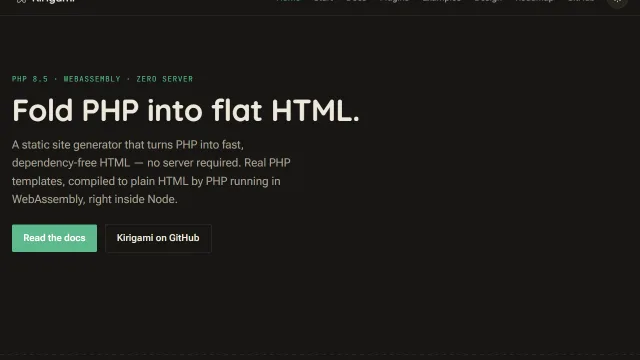

Showcase
Showcase
Sites actually running on Kirigami — starting with this one.

Kirigami
This site. Every page you're reading is a PHP template compiled by kiri export — the docs, the CLI reference, this showcase — built in the open, phase by phase, on the @kirigami/canva design system and @kirigami/plugin-highlight for its code blocks: the same packages anyone installs from npm, not a private fork.
Source

Kirigami Demo
The demo template, deployed as-is: a guided tour of Markdown, images, syntax highlighting, data files, and the tag/hook extension points — each one demoed as a real page rather than described in prose. It's also where <extlink> and <youtube> / <vimeo> — two of the official plugins — get their first real usage outside their own repos.
Live · Source

Kirigami Site (starter)
The default template, deployed without a single line changed — exactly what npx kiri create default gives you. Its own homepage doubles as a map of the project ("Where things live"): where pages, layouts, tags, and styles/scripts each go, so the very first thing a new project shows is how it's organized.
Live · Source
All three deploy the same way: push to main, and kiribuild (the reusable GitHub Action) runs kiri export and publishes dist/ to GitHub Pages — no separate hosting, no build server to maintain. See Tutorial → Deploy for the exact workflow file each of them ships.
Built something with Kirigami you'd like listed here? Open an issue on the main repo with a link — this list is meant to grow.